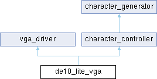

- 構築:
 1.16.1
1.16.1
|
de10-lite-vga
|
DE10-LiteのVGA端子へ640x480 60Hzのモードでカラーバーを出力するモジュール [詳解]

Entities | |
| de10_lite_vga.RTL | architecture |
Libraries | |
| IEEE | |
| DE10-LiteのVGA端子へ640x480 60Hzのモードでカラーバーを出力するモジュール | |
Use Clauses | |
| STD_LOGIC_1164 | |
| NUMERIC_STD | |
Ports | ||
| MAX10_CLK1_50 | in | std_logic |
| DE10-Liteの50MHzクロック入力 | ||
| VGA_R | out | std_logic_vector ( 3 downto 0 ) |
| 赤色信号出力 | ||
| VGA_G | out | std_logic_vector ( 3 downto 0 ) |
| 緑色信号出力 | ||
| VGA_B | out | std_logic_vector ( 3 downto 0 ) |
| 青色信号出力 | ||
| VGA_HS | out | std_logic |
| 水平同期信号出力 | ||
| VGA_VS | out | std_logic |
| 垂直同期信号出力 | ||
DE10-LiteのVGA端子へ640x480 60Hzのモードでカラーバーを出力するモジュール
DE10-LiteのVGA端子へ640x480 60Hzのモードでカラーバーを出力するモジュール